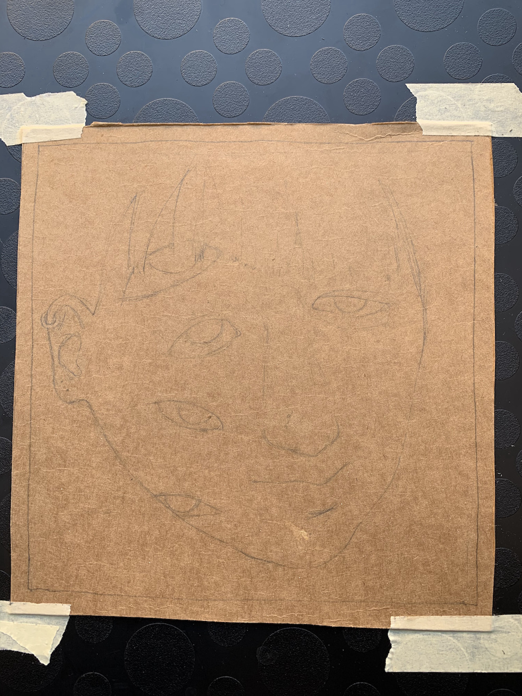
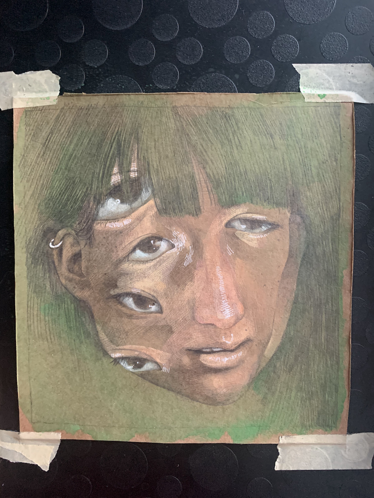
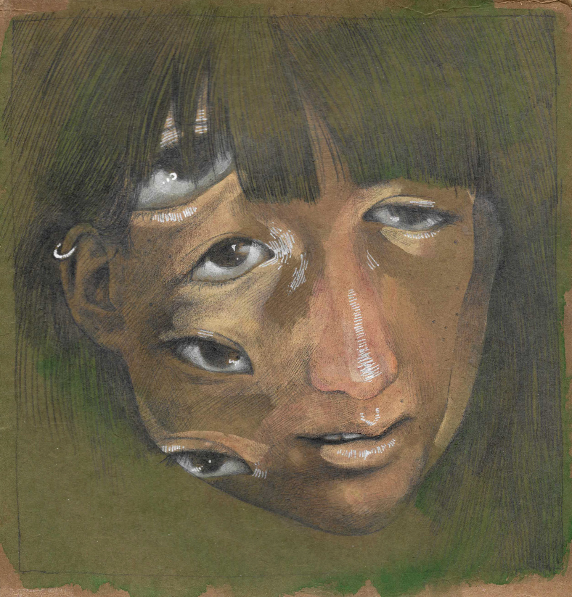
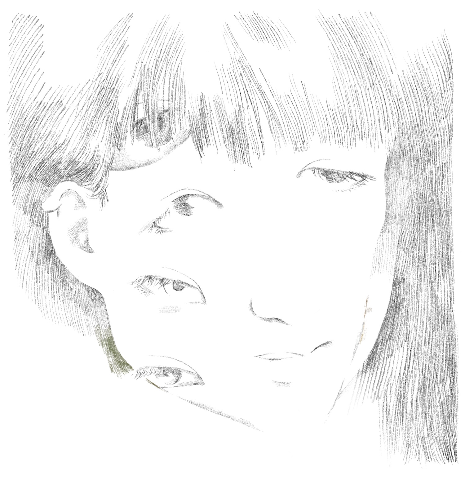
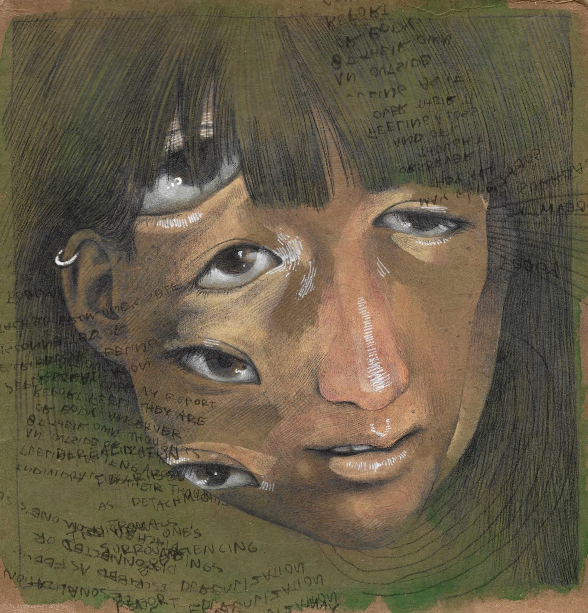

On February 27, it was a lovely day outside! I sat out on the stoop and painted all afternoon. I started with a pencil sketch, on the inside of a cardboard box that used to have beverages in it: 
Then I added gouache, and some details with mechanical pencil and white gel pen: 
Then I scanned it and tweaked the color balance: 
I made edits in Procreate, darkening the shadows and clarifying some edits. Here are the edits I made: 
Here's what it looked like after the edits:

Ultimately, I made two final versions, one with writing as a textural element, and one more minimalist:


Thanks for reading / looking :^)